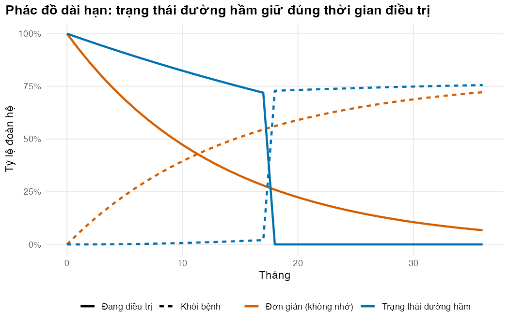

Bài 4: Phụ thuộc thời gian: lão hóa, trạng thái đường hầm và mảng 3 chiều
Cho mô hình biết tuổi của đoàn hệ và tháng điều trị thứ mấy
Vì sao bạn nên quan tâm?
Người bệnh và cán bộ chống lao đếm từng tháng: BPaLM đúng 6 tháng, phác đồ ngắn 9 tháng, phác đồ dài hạn 18 tháng. Một mô hình “quên” tháng điều trị sẽ cho 28% người bệnh “xong” phác đồ dài hạn chỉ sau 6 tháng. Một mô hình đếm sai nửa tháng thuốc và theo dõi ở cuối đợt sẽ tính thiếu 621,032 VNĐ cho mỗi người hoàn thành phác đồ dài hạn; với 100 người hoàn thành, ngân sách trên giấy hụt 62.1 triệu VNĐ, bằng 11.7 tháng lương tối thiểu vùng I (Chính phủ 2025). Bài này dạy mô hình nhớ tuổi và nhớ tháng điều trị, để con số đưa lên Sở Y tế khớp với số hộp thuốc thật.
Mục tiêu học tập
Sau bài này, bạn có thể:
Phân biệt phụ thuộc thời gian mô phỏng (simulation-time dependence) và phụ thuộc thời gian ở trạng thái (state-residence time dependence).
Đưa tử vong theo tuổi vào mô hình bằng một ma trận chuyển cho mỗi chu kỳ, lưu trong mảng 3 chiều.
Dùng trạng thái đường hầm (tunnel state) để mô hình đúng thời gian điều trị của từng phác đồ, và biết khi nào chấp nhận một trạng thái không nhớ.
Kiểm tra rằng mô hình tái tạo đúng các tỷ lệ kết cục đã dùng để xây nó.
Ý chính
Có hai kiểu phụ thuộc thời gian: theo thời gian mô phỏng (tuổi, năm lịch) và theo thời gian đã ở trong một trạng thái (tháng điều trị thứ mấy) (Alarid-Escudero và c.s. 2023).
Phụ thuộc thời gian mô phỏng: \(P_t\) thay đổi theo \(t\) và được lưu trong mảng P[from, to, t]; bước \(t\) của vết dùng P[, , t].
Phụ thuộc thời gian ở trạng thái: tách “Đang điều trị” thành chuỗi Tx1, …, TxD. Ai không gặp biến cố đi đúng một ô mỗi tháng và sang Khỏi bệnh sau đúng \(D\) tháng.
Mỗi phác đồ có không gian trạng thái riêng. Ba phác đồ chỉ cần so sánh được qua kết quả chung: chi phí, QALY, năm sống.
Điều trị lại là một trạng thái không nhớ: đổi độ chính xác về thời gian lấy sự gọn gàng, vì nó chỉ chiếm một phần nhỏ của đoàn hệ.
Lối ra khỏi đường hầm là xác định, đúng ở ranh giới chu kỳ. Chi phí từng tháng điều trị vì vậy đếm ở đầu chu kỳ; quy tắc hình thang sẽ tính thiếu khoảng nửa tháng.
Thêm lão hóa làm số năm sống giảm mạnh so với mô hình tuổi cố định ở Bài 3.
Nội dung
Hai kiểu phụ thuộc thời gian
Mô hình ở Bài 3 có hai khiếm khuyết. Nó không già đi: một người 45 tuổi giữ nguy cơ tử vong của tuổi 45 mãi mãi. Và nó không nhớ: người ở tháng điều trị thứ nhất và thứ mười bảy có cùng xác suất “kết thúc” phác đồ. Khiếm khuyết đầu là phụ thuộc theo thời gian mô phỏng; khiếm khuyết sau là phụ thuộc theo thời gian ở trạng thái(Alarid-Escudero và c.s. 2023).
Lão hóa: một ma trận cho mỗi chu kỳ
Ở chu kỳ \(t\) (chuyển từ \(t-1\) sang \(t\)), tuổi của đoàn hệ là \(a_t = a_0 + (t-1)/12\). Tỷ suất tử vong nền \(m(a_t)\) lấy từ bảng sống Việt Nam (Bài 2), nên mọi lối ra Tử vong thay đổi theo \(t\):
\[
s_t = s_{t-1} P_t, \qquad P_t = P(a_t).
\]
Cách lưu đơn giản nhất là một mảng 3 chiều: chiều 1 là trạng thái xuất phát, chiều 2 là trạng thái đến, chiều 3 là chu kỳ.
Trạng thái đường hầm
Thay một trạng thái “Đang điều trị” bằng \(D\) trạng thái nối tiếp. Mỗi tháng, người ở \(\text{Tx}_k\) có thể thất bại, bỏ điều trị (lost to follow-up) hoặc tử vong với nguy cơ tức thời (hazard) hằng tháng tính ở Bài 2; nếu không, họ sang \(\text{Tx}_{k+1}\). Từ \(\text{Tx}_D\), họ sang Khỏi bệnh.
flowchart LR T1["Tx1"] --> T2["Tx2"] --> T3["…"] --> TD["TxD"] --> C["Khỏi bệnh"] T1 --> X["Thất bại / Bỏ điều trị / Tử vong"] T2 --> X TD --> X X -.->|"Thất bại, Bỏ điều trị"| R["Điều trị lại (một trạng thái)"] R --> C
flowchart LR
T1["Tx1"] --> T2["Tx2"] --> T3["…"] --> TD["TxD"] --> C["Khỏi bệnh"]
T1 --> X["Thất bại / Bỏ điều trị / Tử vong"]
T2 --> X
TD --> X
X -.->|"Thất bại, Bỏ điều trị"| R["Điều trị lại (một trạng thái)"]
R --> C
Không có mũi tên quay lại chính nó trong đường hầm: không ai ở cùng một tháng điều trị hai lần. Vì tổng nguy cơ trong cả đợt điều trị được giữ đúng (Bài 2), tỷ lệ hoàn thành là
đúng bằng tỷ lệ thành công đầu vào. Đây là điều mô hình không nhớ không làm được.
Không gian trạng thái riêng, và một trạng thái điều trị lại không nhớ
Phác đồ dài hạn cần 18 đường hầm, tổng cộng 23 trạng thái; phác đồ ngắn 14 trạng thái; BPaLM 11 trạng thái. Ba ma trận có kích thước khác nhau, và điều đó không sao: quyết định chỉ cần chi phí và QALY kỳ vọng của mỗi phác đồ.
Điều trị lại cũng là một phác đồ 18 tháng, nên lẽ ra cũng cần đường hầm. Module cố ý dùng một trạng thái không nhớ: tháng nào cũng có cùng xác suất hoàn thành 1/18, và các nguy cơ thất bại, bỏ điều trị, tử vong được chọn sao cho tỷ lệ kết cục chung cuộc của đợt điều trị lại khớp với phác đồ dài hạn. Cái giá là thời gian điều trị lại theo phân phối hình học (Bài 1), nên thời điểm chi phí và thời điểm khỏi bệnh của nhóm này chỉ đúng trung bình. Đổi lại, mỗi ma trận chỉ thêm một hàng, và mô hình không phải nhớ “đang điều trị lại tháng thứ mấy” cho người có thể điều trị lại nhiều lần. Đây là một lựa chọn cấu trúc nên ghi vào báo cáo; M03 có thể so sánh nó với cách dùng đường hầm.
Mảng 3 chiều và giới hạn của đường hầm
Mảng P[from, to, t] có kích thước \(K \times K \times n\). Có thể lưu thêm cả dòng chuyển \(i \to j\) ở mỗi chu kỳ để tính giá trị gắn với lần chuyển (transition reward) (Krijkamp và c.s. 2020); module này chỉ tính những dòng cần thiết (Bài 5). Khi cần nhớ nhiều thứ cùng lúc (số lần điều trị lại, thời gian từ lần khỏi gần nhất, lịch sử tuân thủ), số trạng thái bùng nổ; lúc đó mô phỏng vi mô (microsimulation, M04) thích hợp hơn.
Thực hành
Nạp hàm và tham số. Kiểm tra: không có lỗi.
# Vietnamese text in figures needs a UTF-8 locale (Rscript may start in the "C" locale)if (!isTRUE(l10n_info()[["UTF-8"]])) invisible(Sys.setlocale("LC_CTYPE", "en_US.UTF-8"))source("../_shared/R/helpers.R")source("../_shared/R/vn_data.R") # course-wide values: threshold, life table, pricessource("code/model.R")library(ggplot2)p <-m02_params() # params/mdrtb.csv + shared valuesptab <-attr(p, "table")inp <-prepare_inputs(p)
Dựng mảng 3 chiều cho mô hình đơn giản, có lão hóa, rồi xem xác suất tử vong hằng tháng của người đã khỏi ở bốn độ tuổi. Kiểm tra: xác suất tăng dần theo tuổi; năm sống giảm khi có lão hóa.
# Simulation-time dependence: one transition matrix per cycle, stored in a 3-D arrayP_age <-build_P_array(inp, "long", structure ="simple", ageing =TRUE)dim(P_age) # from-state x to-state x cycle
[1] 6 6 660
cycle_for_age <-function(a) (a - p$age_start) *12+1# cycle t uses age a0 + (t - 1) / 12ages_show <-c(p$age_start, 60, 75, 90)cycles_at <-cycle_for_age(ages_show)names(cycles_at) <-paste0("age", ages_show)round(P_age["Cured", "Dead", cycles_at], 5)
# Claims in the lesson: monthly background death rises with age, and ageing shortens life expectancystopifnot(all(diff(P_age["Cured", "Dead", cycles_at]) >0), ly_ageing < ly_fixed)
Xác suất tử vong hằng tháng sau khi khỏi tăng từ 0.094% ở tuổi 45 lên 5.26% ở tuổi 90. Tuổi thọ còn lại không chiết khấu giảm từ 36.8 năm (không lão hóa) xuống 20.5 năm (có lão hóa).
Dựng ma trận đường hầm cho BPaLM ở tuổi bắt đầu và in một phần. Kiểm tra: mỗi \(\text{Tx}_k\) chỉ đi tới \(\text{Tx}_{k+1}\) (hoặc Khỏi bệnh từ Tx6), Thất bại, Bỏ điều trị và Tử vong; không có ô nào từ Tx sang ReTx.
# State-residence dependence: tunnel states Tx1..TxD, one per treatment monthP_tun <-build_P_tunnel(inp, "bpalm", age = p$age_start)dim(P_tun)
Mỗi tháng, 98.3% người đang điều trị BPaLM đi tiếp sang tháng sau.
Dựng mảng 3 chiều có lão hóa cho cả ba phác đồ và kiểm tra mọi lát cắt. Kiểm tra: không có lỗi từ check_tm() sau 1,980 lần kiểm tra.
# Regimen-specific state spaces: each regimen has its own 3-D arrayP_arr <-list()for (g in REGIMENS) P_arr[[g]] <-build_P_array(inp, g)sapply(P_arr, dim)
long short bpalm
[1,] 23 14 11
[2,] 23 14 11
[3,] 660 660 660
for (g in REGIMENS) {for (t inseq_len(inp$n_cycles)) check_tm(P_arr[[g]][, , t])}size_mb <-as.numeric(object.size(P_arr$long)) /1024^2round(size_mb, 1)
[1] 2.7
Mảng của phác đồ dài hạn chiếm khoảng 2.7 MB: nhỏ, nhưng tăng theo bình phương số trạng thái.
Chạy vết đoàn hệ (Markov trace) cho ba phác đồ, rồi so sánh mô hình đường hầm với mô hình không nhớ cho phác đồ dài hạn. Kiểm tra: với đường hầm, tỷ lệ đang điều trị lần đầu về 0 đúng ở tháng 18.
traces <-list()for (g in REGIMENS) { traces[[g]] <-run_trace(P_arr[[g]], initial_state(dimnames(P_arr[[g]])[[1]]))check_trace(traces[[g]])}# Long regimen: tunnel model vs the memoryless (simple) model, first 36 monthstr_simple <-run_trace(build_P_array(inp, "long", "simple"), initial_state(c("OnTx", POST_STATES)))tx_cols <-grepl("^Tx", colnames(traces$long))m <-0:36cmp_df <-rbind(data.frame(month = m, share =rowSums(traces$long[m +1, tx_cols]), state ="Đang điều trị", model ="Trạng thái đường hầm"),data.frame(month = m, share = tr_simple[m +1, "OnTx"], state ="Đang điều trị", model ="Đơn giản (không nhớ)"),data.frame(month = m, share = traces$long[m +1, "Cured"], state ="Khỏi bệnh", model ="Trạng thái đường hầm"),data.frame(month = m, share = tr_simple[m +1, "Cured"], state ="Khỏi bệnh", model ="Đơn giản (không nhớ)"))fig_tunnel <-ggplot(cmp_df, aes(month, share, colour = model, linetype = state)) +geom_line(linewidth =1) +scale_colour_manual(values = pal_course[c(2, 1)], name =NULL) +scale_linetype_manual(values =c("solid", "22"), name =NULL) +scale_y_continuous(labels =function(x) paste0(100* x, "%")) +labs(x ="Tháng", y ="Tỷ lệ đoàn hệ",title ="Phác đồ dài hạn: trạng thái đường hầm giữ đúng thời gian điều trị") +theme_course()save_fig(fig_tunnel, "l04-tunnel.png")

Phác đồ dài hạn: mô hình đường hầm và mô hình không nhớ
Vì mọi người rời Tx6 đúng ở cuối tháng thứ 6, tỷ lệ đang điều trị “nhảy bậc” xuống 0. Hãy xem quy tắc hình thang tính bao nhiêu tháng thuốc khi tắt mọi biến cố lao và không chiết khấu. Kiểm tra: đếm ở đầu chu kỳ phải cho gần đúng 6 tháng (stopifnot).
# How many treatment months does each counting rule bill? Switch off TB events and# discounting: the right answer is D months minus a few background deaths.p_chk <-switch_off_tb(p) # 100% success on every first-line regimeninp_chk <-prepare_inputs(p_chk)tr_chk <-run_trace(build_P_array(inp_chk, "bpalm"), initial_state(tunnel_states(p$dur_bpalm)))on_tx_share <-rowSums(tr_chk[, grepl("^Tx", colnames(tr_chk))])months_tab <-c(trapezoid =sum(cycle_weights(inp$n_cycles, "trapezoid") * on_tx_share),start =sum(cycle_weights(inp$n_cycles, "start") * on_tx_share))round(months_tab, 3)
Đếm ở đầu chu kỳ cho 6.00 tháng: đủ 6 tháng trừ phần nhỏ người tử vong do nguyên nhân khác. Quy tắc hình thang chỉ cho 5.50 tháng, vì nó lấy trung bình giữa tháng cuối (còn đủ người) và ranh giới ngay sau (không còn ai). Vì thuốc được cấp đầu mỗi tháng, evaluate_regimen() đếm chi phí điều trị ở đầu chu kỳ (Bài 3).
Mô hình có tái tạo đúng tỷ lệ kết cục cuối điều trị đã dùng để xây nó không? Hàm tx_outcomes() cộng dồn dòng chuyển ra khỏi các tháng điều trị lần đầu. Kiểm tra: cột tunnel trùng cột target (có stopifnot).
# Do the models reproduce the end-of-treatment outcomes they were built from?rep_tab <-NULLfor (g in REGIMENS) { out_tunnel <-tx_outcomes(traces[[g]], P_arr[[g]], inp$duration[[g]]) rep_tab <-rbind(rep_tab, data.frame(regimen = g, outcome =names(out_tunnel),target =as.vector(inp$q_unfav[[g]]),tunnel =as.vector(out_tunnel)))}# Memoryless model: eventual outcomes of everyone who ever left OnTx (long regimen)P_s <-build_P_array(inp, "long", "simple")simple_out <-c(failure =sum(transition_flow(tr_simple, P_s, "OnTx", "Failed")),death =sum(transition_flow(tr_simple, P_s, "OnTx", "Dead")),ltfu =sum(transition_flow(tr_simple, P_s, "OnTx", "LTFU")))rep_tab$simple <-NArep_tab$simple[rep_tab$regimen =="long"] <- simple_outprint(rep_tab, digits =3)
regimen outcome target tunnel simple
1 long failure 0.0429 0.0429 0.0376
2 long death 0.0928 0.0928 0.0816
3 long ltfu 0.1583 0.1583 0.1390
4 short failure 0.0307 0.0307 NA
5 short death 0.0665 0.0665 NA
6 short ltfu 0.1135 0.1135 NA
7 bpalm failure 0.0107 0.0107 NA
8 bpalm death 0.0473 0.0473 NA
9 bpalm ltfu 0.0397 0.0397 NA
stopifnot(max_err <1e-4)# The memoryless model lets people "finish" early, so its eventual failure share is below the inputstopifnot(simple_out[["failure"]] < inp$q_unfav$long[["failure"]])
Mô hình đường hầm khớp, với sai lệch lớn nhất 1.1e-16; ở tuổi bắt đầu khác, khi tử vong nền đổi nhóm tuổi giữa đợt điều trị, sai lệch vẫn dưới ngưỡng 1e-4 của bộ xác minh (Bài 5). Mô hình không nhớ cho tỷ lệ thất bại chung cuộc 3.76% thay vì 4.29%, vì nó để một phần đoàn hệ “kết thúc” phác đồ quá sớm, trước khi kịp gặp biến cố.
Xem trạng thái điều trị lại: xác suất rời nó mỗi tháng, nơi người bệnh đi tới khi rời nó, và có bao nhiêu người từng vào điều trị lại với mỗi phác đồ đầu tiên. Kiểm tra: các tỷ lệ “nơi đi tới” cộng bằng 1 và khớp kết cục của phác đồ dài hạn (stopifnot).
# Retreatment is ONE memoryless state (no tunnel): a compromise that keeps the model small.# Its exit probabilities per month, and where people end up once they leave it:round(P_tun["ReTx", c("ReTx", "Cured", "Failed", "LTFU", "Dead")], 4)
ReTx Cured Failed LTFU Dead
0.9243 0.0534 0.0032 0.0120 0.0070
Một đợt điều trị lại kéo dài trung bình 13.2 tháng trong mô hình, ngắn hơn 18 tháng vì có người rời sớm do biến cố; 71% kết thúc bằng khỏi bệnh. Với phác đồ dài hạn, 10.3% đoàn hệ từng vào điều trị lại; với BPaLM chỉ 2.6%. Phác đồ đầu tiên tốt hơn còn tiết kiệm được những đợt điều trị lại này.
Cuối cùng, so sánh kết quả kinh tế của hai cấu trúc (đều có lão hóa, chưa có biến cố bất lợi). Kiểm tra: chênh lệch giữa BPaLM và phác đồ ngắn đổi theo cấu trúc mô hình.
# Both structures agree on the direction of the differences (the text relies on this)stopifnot(sign(d_cost_simple) ==sign(d_cost_tunnel), sign(d_qaly_simple) ==sign(d_qaly_tunnel))
Với mô hình đường hầm, BPaLM rẻ hơn phác đồ ngắn 2.2 triệu VNĐ và thêm 0.48 QALY mỗi người bệnh; mô hình không nhớ cho 1.2 triệu VNĐ và 0.39 QALY. Cấu trúc mô hình là một nguồn bất định (structural uncertainty) mà M03 sẽ bàn.
Mẹo thực hành
Sinh tên trạng thái bằng hàm (tunnel_states(D)), không gõ tay 23 tên.
Kiểm tra mọi lát cắt của mảng, không chỉ lát đầu: lỗi thường xuất hiện ở tuổi rất cao hoặc ở chu kỳ cuối.
Gán giá trị cho mọi tháng điều trị bằng mẫu tên (grepl("^Tx", states)), không liệt kê từng tháng; nhớ rằng ReTx không khớp mẫu này và cần dòng riêng.
Chạy lại kiểm tra “mô hình tái tạo đầu vào” mỗi khi đổi cấu trúc, kể cả cho trạng thái điều trị lại.
Lỗi thường gặp
Lệch một chu kỳ: dùng P[, , t + 1] hoặc tuổi \(a_0 + t/12\) cho bước \(t\). Dấu hiệu: xác suất tử vong nền ở chu kỳ 1 không khớp tuổi bắt đầu.
Đường hầm cụt: quên đưa người ở \(\text{Tx}_D\) sang Khỏi bệnh; tổng hàng khác 1 và check_tm() báo lỗi.
Tính sai tháng điều trị: chỉ gán chi phí cho Tx mà quên ReTx; hoặc áp hình thang cho chi phí thuốc, làm mất khoảng nửa tháng thuốc.
So sánh các phác đồ bằng cách ghép ma trận khác cỡ: chỉ so sánh kết quả tổng hợp, không so sánh từng trạng thái.
Bài tập
(Dễ) Phác đồ dài hạn có thể kéo dài tới cận trên của khoảng tham số. Chạy lại với phác đồ dài hạn thêm 2 tháng. Số trạng thái, chênh lệch chi phí và QALY giữa phác đồ dài hạn và phác đồ ngắn thay đổi thế nào?
Lời giải
# Exercise 1: long regimen at the upper bound of its parameter rangep20 <- pp20$dur_long <- ptab$high[ptab$name =="dur_long"]res20 <-run_cea(p20, events =FALSE)d_cost_long_short <- res_tunnel["long", "cost"] - res_tunnel["short", "cost"]d_qaly_long_short <- res_tunnel["long", "qaly"] - res_tunnel["short", "qaly"]d_qaly_long_short_20 <- res20["long", "qaly"] - res20["short", "qaly"]# Claims in the lesson: the long regimen costs more than the short one and the gap widens with 2 more# months, while the QALY difference barely moves (the monthly hazards are re-derived to keep the outcomes)stopifnot(d_cost_long_short >0, res20["long", "cost"] - res20["short", "cost"] > d_cost_long_short,abs(d_qaly_long_short_20 - d_qaly_long_short) <0.05)round(c(n_states_long =length(tunnel_states(p20$dur_long)),d_cost_million_18 = d_cost_long_short /1e6,d_cost_million_20 = (res20["long", "cost"] - res20["short", "cost"]) /1e6,d_qaly_18 = d_qaly_long_short,d_qaly_20 = res20["long", "qaly"] - res20["short", "qaly"]), 3)
Mô hình phác đồ dài hạn có 25 trạng thái. Phác đồ dài hạn đắt hơn phác đồ ngắn 7.7 triệu VNĐ, nay thành 9.7 triệu VNĐ, vì tốn thêm 2 tháng thuốc và theo dõi. Chênh lệch QALY đổi ít (-0.421 thành -0.402), vì nguy cơ hằng tháng được tính lại để giữ nguyên tỷ lệ kết cục cuối điều trị. Lưu ý: dur_long cũng là thời gian điều trị lại, nên cả ba phác đồ đều đổi một chút.
(Vừa) Giả sử thỏa dụng trong 2 tháng điều trị đầu thấp hơn mức thường bằng 0.15 (giá trị minh họa). Tính lại QALY của phác đồ dài hạn. Vì sao chỉ mô hình đường hầm làm được việc này?
Lời giải
# Exercise 2: lower utility in the first 2 treatment months (by d_ae), long regimen.# Only a tunnel model can do this: OnTx alone does not know the treatment month.states_long <-colnames(traces$long)r <-state_rewards(p, "long", states_long)u_mod <- r$utilityu_mod[c("Tx1", "Tx2")] <- u_mod[c("Tx1", "Tx2")] - p$d_aen <- inp$n_cycleswd <-cycle_weights(n) *discount_weights((0:n) /12, p$disc_rate)round(c(base =sum(wd * traces$long %*% r$utility) /12,lower_first_2m =sum(wd * traces$long %*% u_mod) /12), 4)
base lower_first_2m
12.4954 12.4769
Mô hình không nhớ không biết một người đang ở tháng điều trị thứ mấy, nên không thể gán thỏa dụng riêng cho hai tháng đầu. Với đường hầm, chỉ cần sửa thỏa dụng của Tx1 và Tx2. Cùng lý do đó, trạng thái ReTx không làm được việc này cho đợt điều trị lại.
(Khó) Đoàn hệ MDR/RR-TB tại Việt Nam của MacLean và cộng sự ghi nhận 16.5% người tham gia tử vong từ khi vào nghiên cứu đến hết theo dõi (trung vị 4.3 năm), tức 42.6 ca tử vong/1000 người-năm (MacLean và c.s. 2026). Tính hai con số tương ứng từ vết của mô hình, cùng tỷ lệ còn sống sau 5 năm. Những khác biệt nào về thiết kế làm hai nguồn không so sánh trực tiếp được?
Lời giải
# Exercise 3: crude external validation against the Vietnamese cohort of MacLean et al.# Model deaths and death rate over the cohort's median follow-up, from treatment start.m_val <-round(12* p$val_followup_years) # months of follow-upval_tab <-NULLfor (g in REGIMENS) { tr <- traces[[g]] alive <-1- tr[, "Dead"] died <- tr[m_val +1, "Dead"] person_years <-sum(cycle_weights(m_val) * alive[1:(m_val +1)]) /12 val_tab <-rbind(val_tab, data.frame(source = g, alive_5y =1- tr["60", "Dead"],died = died, deaths_per_1000py =1000* died / person_years))}val_tab <-rbind(val_tab, data.frame(source ="MacLean 2026 (observed)", alive_5y =NA,died = p$val_died_prop, deaths_per_1000py =1000* p$val_mort_rate))print(val_tab, digits =3)
source alive_5y died deaths_per_1000py
1 long 0.845 0.146 37.5
2 short 0.870 0.122 30.7
3 bpalm 0.899 0.094 23.2
4 MacLean 2026 (observed) NA 0.165 42.6
Đến tháng 52, mô hình cho 14.6% người dùng phác đồ dài hạn đã tử vong (37.5/1000 người-năm), so với 12.2% với phác đồ ngắn và 9.4% với BPaLM. Mô hình phác đồ dài hạn thấp hơn số quan sát 16.5%. Hai nguồn khác nhau ở nhiều điểm: đoàn hệ tuyển người bệnh năm 2016–2020 với các phác đồ khuyến cáo khi đó, còn mô hình dùng kết cục của giai đoạn 2021–2022; tử vong trong đoàn hệ được tìm chủ động, còn số liệu chương trình bỏ sót nhiều ca (Bài 2); thời gian theo dõi khác nhau giữa người tham gia; tuổi và giới khác mô hình. Đây là thẩm định ngoại (external validation) thô: hữu ích để phát hiện sai lệch lớn, không đủ để “chứng minh” mô hình đúng. Hiệu chuẩn mô hình theo những đích như thế này là nội dung của M08.
Tài liệu tham khảo
Alarid-Escudero, Fernando, Eline Krijkamp, Eva A. Enns, Alan Yang, M. G. Myriam Hunink, Petros Pechlivanoglou, và Hawre Jalal. 2023. “A tutorial on time-dependent cohort state-transition models in R using a cost-effectiveness analysis example”. Medical Decision Making 43 (1): 21–41. https://doi.org/10.1177/0272989X221121747.
Krijkamp, Eline M., Fernando Alarid-Escudero, Eva A. Enns, Petros Pechlivanoglou, M. G. Myriam Hunink, Alan Yang, và Hawre J. Jalal. 2020. “A multidimensional array representation of state-transition model dynamics”. Medical Decision Making 40 (2): 242–48. https://doi.org/10.1177/0272989X19893973.
MacLean, Emily Lai-Ho, Yen Ngoc Pham, Cuong Duc Pham, Binh Cam Nguyen, Frances L. Garden, Tasnim Hasan, Thu-Anh Nguyen, và c.s. 2026. “Long-term outcomes among people with multidrug-resistant tuberculosis in Vietnam: a prospective cohort study”. Clinical Infectious Diseases 81 (6): e623–31. https://doi.org/10.1093/cid/ciaf363.
Kịch bản video (~14 phút)
#
Slide
Lời giảng chính
Hình/Code
1
Nửa tháng thuốc = 62.1 triệu VNĐ cho 100 người hoàn thành
mô hình phải nhớ tháng điều trị
callout
2
Hai kiểu phụ thuộc thời gian
thời gian mô phỏng và thời gian ở trạng thái
sơ đồ
3
Lão hóa
\(P_t = P(a_t)\); tuổi thọ còn lại 36.8 → 20.5 năm
chunk l04-ageing
4
Mảng 3 chiều
P[from, to, t]; vết dùng P[, , t]
chunk l04-array
5
Trạng thái đường hầm
Tx1 → … → TxD → Khỏi bệnh; không có vòng ở lại
sơ đồ Mermaid
6
Không gian trạng thái riêng
23, 14 và 11 trạng thái
chunk l04-tunnel
7
Nhìn vết đoàn hệ
đường hầm giữ đúng 18 tháng; đếm thuốc ở đầu chu kỳ
figs/l04-tunnel.png, chunk l04-tx-months
8
Mô hình tái tạo đầu vào
kiểm tra bắt buộc; mô hình không nhớ thì lệch
chunk l04-reproduce
9
Điều trị lại không nhớ
một trạng thái; đúng kết cục chung cuộc, sai thời gian; ít người vào hơn với BPaLM
chunk l04-retx
10
Kết quả theo cấu trúc
cấu trúc mô hình là một nguồn bất định
chunk l04-results
11
Chuyển tiếp
thêm biến cố, đường biên hiệu quả, xác minh mô hình → Bài 5